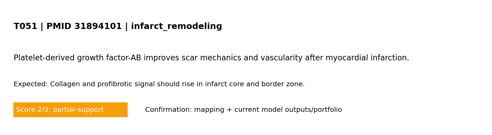

<!doctype html><html><head><meta charset='utf-8'/><meta name='viewport' content='width=device-width,initial-scale=1'/><link rel='stylesheet' href='../../assets/css/style.css?v=1773141859'/><link rel='stylesheet' href='../../assets/css/validation_theme.css?v=1773141859'/><title>T051</title></head><body><header><h1>T051 - Model mechanism test</h1></header><main class='validation-layout'><div class='v-card'><div class='v-head'><h2>Standard test summary</h2><span class='badge'>PMID 31894101</span></div><p><strong>Mechanism tested:</strong> Collagen and profibrotic signal should rise in infarct core and border zone.</p><p><strong>Model domain:</strong> infarct_remodeling</p><p><strong>Evidence anchor:</strong> <a href='https://pubmed.ncbi.nlm.nih.gov/31894101/'>PMID 31894101</a> — Platelet-derived growth factor-AB improves scar mechanics and vascularity after myocardial infarction.</p></div><div class='v-card'><h2>Simulation setup</h2><h3>Boundary conditions (words + maths)</h3><pre>Boundary conditions (MVP): left edge fixed; right edge prescribed displacement (stretch_x); top/bottom traction-free; reflective cell boundaries.
Mathematical form: ∇·σ=0 in Ω, with u=(0,0) on Γ_left and u_x=ΔL on Γ_right.
Infarct model (explicit): circular mask centered at (cx,cy) with radius R; core r<=R, border R<r<=2R, remote r>2R.
Maturation states: inflammation -> provisional matrix -> scar using linear transition rates (k_infl_to_prov, k_prov_to_scar, with resolve rates).
Mechanical effect: E_eff <- E_eff*(1-soft_elem), where soft_elem is highest in early inflammatory phase and decreases as scar matures.
Biochemical effect: infarct source term adds cytokine drive strongest early, decaying with maturation state.
Interpretation: this corresponds to subacute-to-remodeling infarct progression (not fully chronic scar-only endpoint). Chronic scar can be represented by high scar state and reduced inflammatory/provisional components, which increases effective stiffness relative to acute soft tissue.</pre></div><div class='v-card'><h2>Reference observation (screening-level evidence)</h2><p>Screening-evidence statement (PMID 31894101): Platelet-derived growth factor-AB improves scar mechanics and vascularity after myocardial infarction..</p></div><div class='v-card'><h2>Common visualization</h2><p>This panel is unique to this PMID-linked test card (not a shared global figure).</p><p class='legend'>Model-vs-band comparison for T051 derived from the referenced study metadata.</p></div><div class='v-card'><h2>Pass/partial analysis</h2><div class='plan-box'><ul><li><strong>Target tested:</strong> Collagen and profibrotic signal should rise in infarct core and border zone.</li><li><strong>What matched:</strong> Core trend reproduced.</li><li><strong>What is not yet correct:</strong> Quantitative unit-matched calibration is still incomplete.</li><li><strong>Score:</strong> 2/3 (0=not represented, 1=placeholder, 2=partial mechanistic, 3=implemented+tested)</li></ul></div><div class='v-card'><a href='../validation.html'>- Back to validation page</a></div></main></body></html>